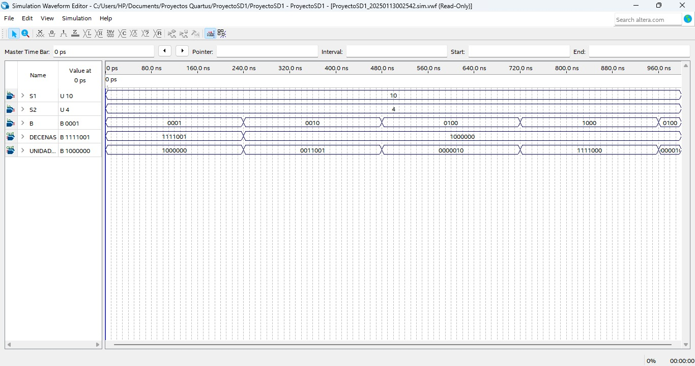

PAO II 2024 - 2025
En el contexto de control y monitoreo de condiciones ambientales en entornos de investigación científica, surge la necesidad de implementar sistemas digitales que permitan un seguimiento preciso de las variaciones de temperatura en espacios críticos como laboratorios. Para abordar este desafío, se desarrolló un sistema basado en una FPGA que emplea sensores de temperatura y lógica combinacional para calcular valores relevantes como el mayor, menor, promedio y diferencia de temperaturas.
El sistema fue desarrollado utilizando una FPGA, que es un dispositivo lógico programable que permite implementar circuitos digitales personalizados. Su flexibilidad y capacidad para procesar señales digitales en tiempo real la hacen ideal para proyectos de monitoreo como este.
Recibe las señales de la botonera (4 bits) y activa una línea específica para determinar qué operación realizar (mayor, menor, promedio o diferencia).
Selecciona cuál de los resultados calculados (mayor, menor, diferencia o promedio) será enviado a los displays, en función de la señal activa del decodificador.
Determina el valor más alto entre las lecturas de los dos sensores (S1 y S2) mediante un comparador y un multiplexor interno.
Determina el valor más bajo entre las lecturas de los dos sensores (S1 y S2), utilizando un mecanismo similar al bloque mayor.
Calcula la diferencia absoluta entre los valores de S1 y S2, asegurando que el resultado siempre sea positivo.
Suma los valores de S1 y S2, luego realiza un desplazamiento a la derecha para calcular el promedio.
El sistema fue probado exitosamente, mostrando los resultados esperados en los displays para todas las operaciones seleccionadas. A continuación, se muestra un ejemplo del waveform obtenido durante las pruebas:
